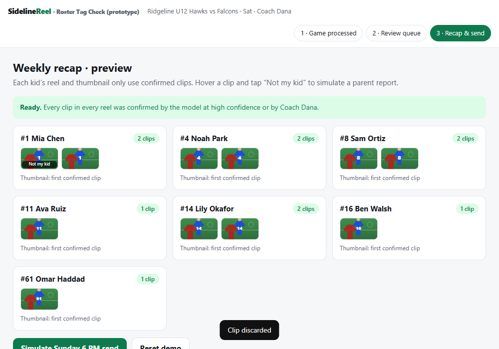
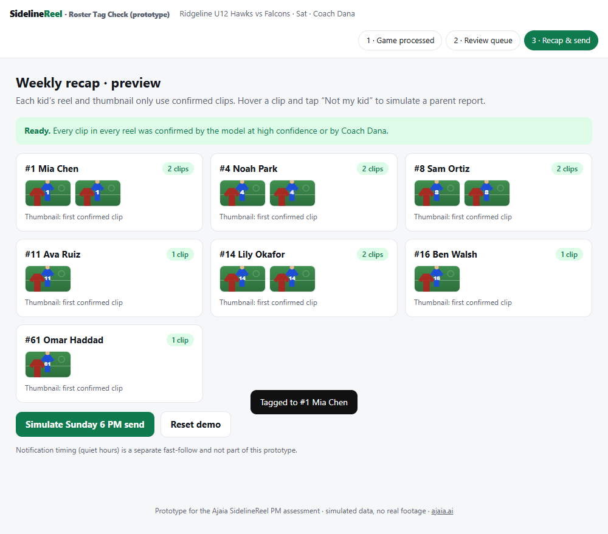
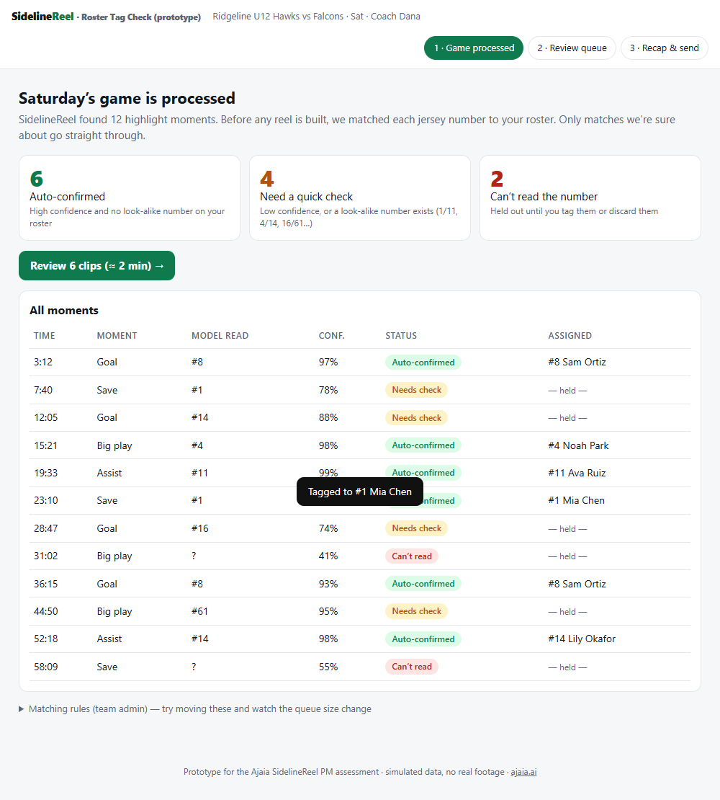
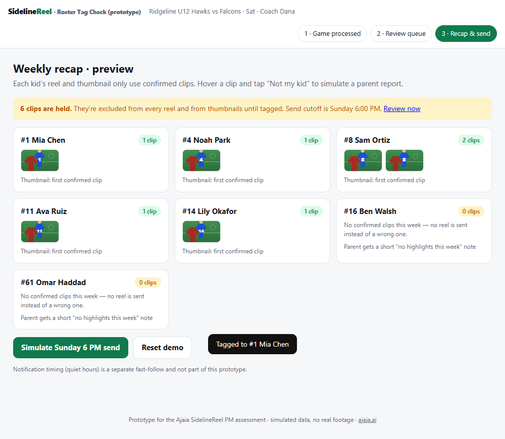

SidelineReel — Prototype Walkthrough
Roster-tag confidence + coach confirm · a step-by-step tour of every screen and action · Ajaia PM assessment ·
ajaia.aiWhat this prototype is. A self-contained, simulated demo (no real footage, no backend) of the top roadmap item: before SidelineReel builds each kid’s highlight reel, it checks how sure it is that a jersey number was matched to the right player. Sure matches go through; unsure ones are held and a coach confirms them in a short queue. Anything still unresolved at send time is left out, never guessed.
How to open it
- Open prototype/index.html in any browser (or the hosted link in the submission document). No install needed.
- Use the three buttons at top right to jump between screens. “Reset demo” on screen 3 starts over.
The demo data
| Roster | #1 Mia Chen · #4 Noah Park · #8 Sam Ortiz · #11 Ava Ruiz · #14 Lily Okafor · #16 Ben Walsh · #61 Omar Haddad |
|---|
| Look-alike pairs on this roster | 1 / 11 · 4 / 14 · 16 / 61 (these mirror the mix-ups in the support tickets) |
|---|
| Moments found | 12 clips: 6 auto-confirmed, 4 needing a check, 2 unreadable |
|---|
Vocabulary
| Auto-confirmed | Confident enough to go straight into a reel. |
|---|
| Needs check | Low confidence, or a look-alike number exists. Held until the coach decides. |
|---|
| Can’t read | Number not visible. Held until tagged or discarded. |
|---|
| Held | Excluded from reels, thumbnails and the recap. |
|---|
Contents
- Step 1 — Open the prototype: “Game processed”
- Step 2 — Open the “Matching rules” panel (optional)
- Step 3 — Try a stricter rule and watch the queue grow
- Step 4 — Put the rule back to 97%
- Step 5 — Start the review queue
- Step 6 — Clip 1 of 6: confirm Mia Chen (#1)
- Step 7 — Clip 2 of 6: confirm Lily Okafor (#14)
- Step 8 — Clip 3 of 6: confirm Ben Walsh (#16)
- Step 9 — Clip 4 of 6: tag an unreadable clip by choosing “Someone else”
- Step 10 — Clip 5 of 6: confirm Omar Haddad (#61)
- Step 11 — Clip 6 of 6: discard a clip
- Step 12 — Recap preview with every clip confirmed
- Step 13 — Simulate a parent report: hover a clip
- Step 14 — After the report: clip removed and sent back to the coach
- Step 15 — The reported clip appears in the review queue
- Step 16 — Coach resolves it, recap is ready again
- Step 17 — Send the recap
- Step 18 — Second scenario: reset the demo
- Step 19 — Jump straight to the recap without reviewing
- Step 20 — The send cutoff passes with clips still held
Part A — Game processed and matching rules
Step 1 — Open the prototype: “Game processed”
You land on screen 1 of 3. Saturday’s game (Ridgeline U12 Hawks vs Falcons, Coach Dana) has already been processed. SidelineReel found 12 highlight moments and, before building any reel, matched each jersey number to the roster.

- Auto-confirmed (6): the model is confident and no other player on the roster has a look-alike number.
- Need a quick check (4): low confidence, or a look-alike number exists (for example 1 vs 11, 4 vs 14, 16 vs 61).
- Can’t read the number (2): held out until the coach tags or discards them.
- The table lists every moment with the number the model read, its confidence, its status and who it is assigned to. Anything not auto-confirmed shows “— held —”.
- The three step buttons at top right (1 · Game processed, 2 · Review queue, 3 · Recap & send) let you jump between screens at any time.
Step 2 — Open the “Matching rules” panel (optional)
Click “Matching rules (team admin)” below the table. Three sliders control when a clip is trusted automatically. These are starting values only; in production they are calibrated on a labeled audit of real games.

- Auto-confirm at ≥ 90% when no look-alike number exists on the roster.
- Auto-confirm at ≥ 97% when a look-alike number does exist. This is the stricter bar that targets the 4/14 and 1/11 mix-ups from the support tickets.
- Unreadable below 60%: the number is treated as not readable.
Step 3 — Try a stricter rule and watch the queue grow
Drag the look-alike slider up (here to 99.5%). The counts at the top change immediately: more clips fall into “Need a quick check” because fewer clear the bar. Changing a rule also resets any decisions you’ve made.

- This is the core tradeoff the spec is built around: stricter rules mean fewer wrong-kid clips but more work for the coach.
- In the real product the right setting is chosen from audit data, and the spec has an alert if too many clips are held.
Step 4 — Put the rule back to 97%
Set the look-alike slider back to 97% (or click “Reset demo” later) so the rest of the walkthrough matches these screenshots: 6 auto-confirmed, 4 need a check, 2 can’t be read.

Part B — The coach review queue
Step 5 — Start the review queue
Click “Review 6 clips”. Screen 2 shows one unclear clip at a time with a progress bar. A still frame from the footage is on the left; the decision panel is on the right.

- The yellow box explains why you’re seeing this clip. Here the model read #1 at 78%, and the roster also contains #11 — numbers that can be confused.
- The candidate buttons list the model’s guess (blue border, labeled “model’s guess”) plus look-alike players from the roster.
- “Someone else on the roster…” lets the coach pick any other player; “Not a rostered player / discard clip” removes the clip.
- Nothing unresolved is ever sent to families.
Step 6 — Clip 1 of 6: confirm Mia Chen (#1)
The coach looks at the frame and clicks “#1 Mia Chen”. A toast confirms the tag, the progress bar moves, and the next clip appears.

- This is the next clip: a goal read as #14 at 88%. Because #4 is on the roster (14 contains 4), the clip needs a check. The candidates are Lily Okafor (#14, the model’s guess) and Noah Park (#4, the look-alike).
- This is the exact mix-up in the Ridgeline parent’s ticket: a 14 shown as a 4.
Step 7 — Clip 2 of 6: confirm Lily Okafor (#14)
The coach confirms #14 Lily Okafor. The next flagged clip is a goal read as #16 at 74%, with #61 on the roster (swapped digits).

Step 8 — Clip 3 of 6: confirm Ben Walsh (#16)
Next is a clip where the number could not be read at all (the digits are blurred). There are no candidate buttons because the model has no guess; the coach uses the dropdown or discards.

- The blur in the frame reflects the low confidence. The yellow box says “Number not readable in this frame.”
Step 9 — Clip 4 of 6: tag an unreadable clip by choosing “Someone else”
The coach recognises the play, opens the dropdown and picks #4 Noah Park. This shows the manual path for clips the model could not read. The next clip is a big play read as #61 at 95%, flagged because #16 is on the roster.

Step 10 — Clip 5 of 6: confirm Omar Haddad (#61)
The coach confirms #61. The last clip is another unreadable one (55% confidence).

Step 11 — Clip 6 of 6: discard a clip
The coach cannot tell who it is, so they click “Not a rostered player / discard clip”. The queue is now empty and shows an “All clear” banner with a button to continue.

- Discarding is a legitimate outcome: a missing clip is better than a wrong-kid clip.
Part C — Recap, parent report and send
Step 12 — Recap preview with every clip confirmed
Screen 3 shows the weekly recap. Each player’s card shows how many confirmed clips are in their reel and thumbnails of those clips. The green banner reads “Ready.”

- Reels and thumbnails are built only from confirmed clips — this is what stops the wrong-kid thumbnail from being shown.
- A player with no confirmed clips (for example Omar if his clip were unresolved) would get a short “no highlights this week” note instead of a reel.
Step 13 — Simulate a parent report: hover a clip
Hover over any thumbnail in a reel. A “Not my kid” button appears at the bottom of the thumbnail. This is what a parent would tap if a clip in their child’s reel is someone else.

- Parents are the last safety net for mistakes the model was confident about.
Step 14 — After the report: clip removed and sent back to the coach
Clicking “Not my kid” removes the clip from that reel immediately, and the banner changes to show a clip is held again. The clip returns to the coach’s queue with the reason “Reported by a parent as ‘not my kid’.”

Step 15 — The reported clip appears in the review queue
Clicking “Review now” in the banner opens the queue. The reported clip is shown with a yellow reason box. The coach decides again.

Step 16 — Coach resolves it, recap is ready again
The coach picks the correct player and returns to the recap. The banner is green again.

Step 17 — Send the recap
Click “Simulate Sunday 6 PM send”. The banner confirms how many families received a recap and the button changes to “Sent”. The “Not my kid” buttons disappear because the recap is out.

Part D — Second scenario: the coach does nothing
Step 18 — Second scenario: reset the demo
Click “Reset demo”. All decisions are cleared and you are back on screen 1. This time we’ll show what happens if the coach does nothing.

Step 19 — Jump straight to the recap without reviewing
Click “3 · Recap & send” at the top. The yellow banner says 6 clips are held and that they are excluded from every reel and thumbnail. Some players have no confirmed clips.

- Compare this with Step 12: held clips are simply missing, never guessed.
Step 20 — The send cutoff passes with clips still held
Click “Simulate Sunday 6 PM send”. The recap goes out with confirmed clips only. The banner reports how many unresolved clips were left out and says the coach is reminded to tag them for next week.

- Key rule from the spec: nothing unreviewed is ever sent. The worst outcome is a thinner reel, not a wrong-kid reel.
Takeaway. The prototype shows the product rule in the spec: ambiguous matches get a human, parents can flag mistakes, and unresolved clips are excluded rather than guessed. The matching rules panel shows the tradeoff the team must tune: fewer wrong-kid clips versus more coach work.